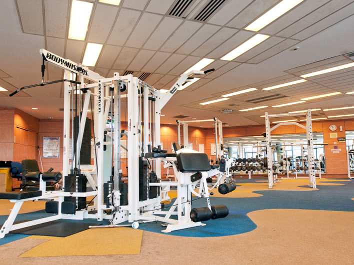
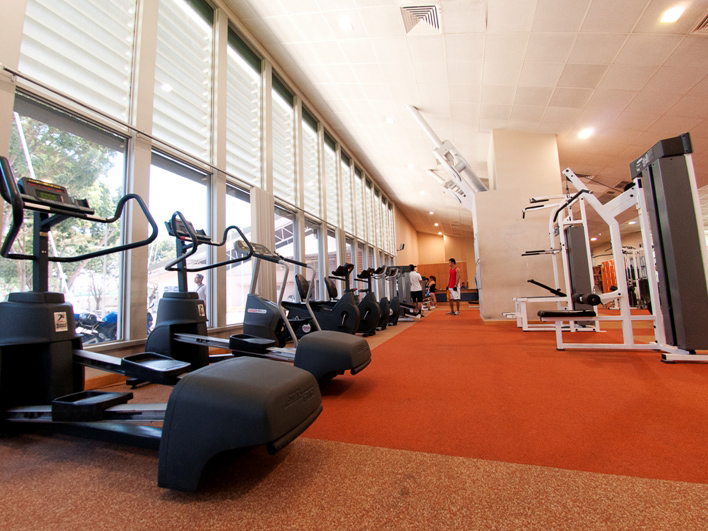
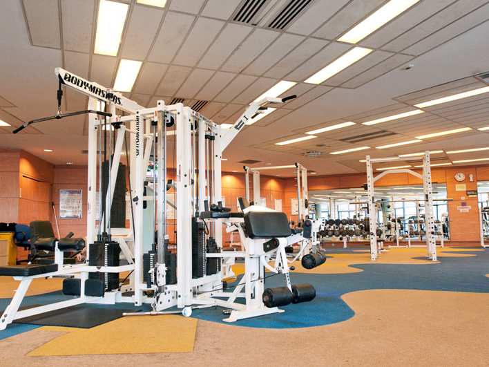
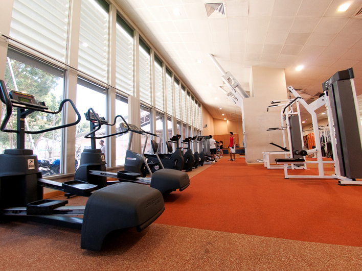
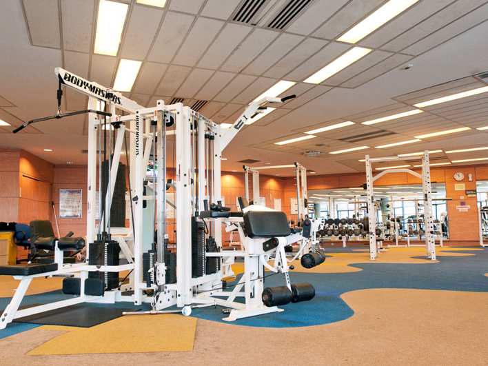
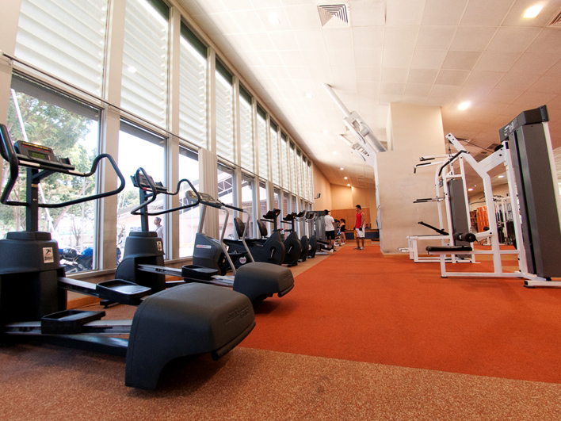
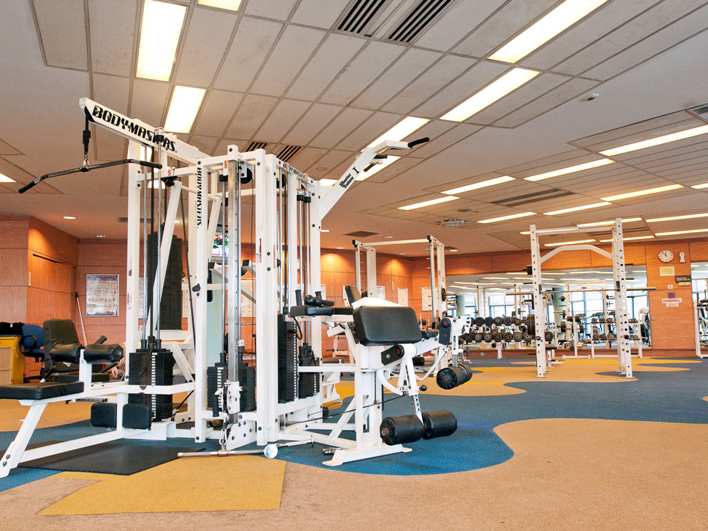
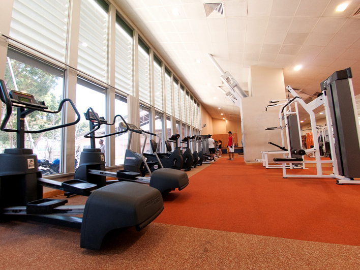

Well, fret not! Grab your towels, sneakers and IC/EZlink cards! Woodlands ActiveSG Gym welcomes all aspiring to boost their health and fitness! Woodlands ActiveSG Gym, formerly known as Woodlands ClubFITT Gym, is a public gym operated by Sport Singapore, and it is located in the Woodlands Sport Centre. Woodlands Sport Centre operates in a mature estate, providing top class service with its upgraded and well-maintained facilities. You'll never dread working out again! Enjoy exercising with your family and friends! Where better to burn those calories and tone those muscles, than at a public gym with top quality equipment, easy access and a wide range of affordable programmes? Scroll down to watch our informational video to learn about the benefits you could gain in registering with us!